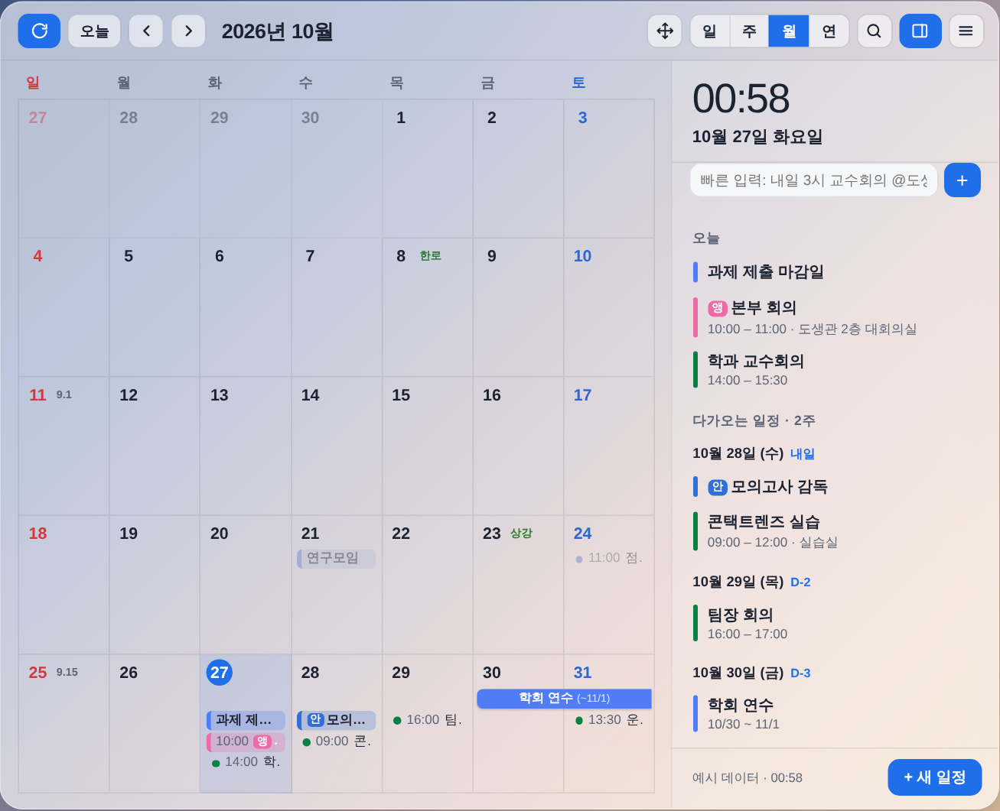

내 구글 캘린더를
바탕화면에 그대로
바탕화면 달력은 내 구글 캘린더 일정을 Windows 바탕화면에 항상 보여 주는 달력 앱입니다. 다른 프로그램 창을 가리지 않고 바탕화면에 붙어 있으며, 일정을 보고 바로 추가·수정할 수 있습니다.

다운로드 · 설치
1. 내려받기
권장: Microsoft Store에서 설치하면 경고 없이 설치되고 업데이트도 자동입니다. 또는 DesktopCalendar-Setup.exe (Windows 10/11, 약 90MB)를 직접 내려받을 수 있습니다. Arm64 PC(Snapdragon 등)는 Arm64용 설치 파일을 받으세요(스토어는 자동으로 맞는 버전을 설치). 지난 버전은 배포 기록에서 볼 수 있습니다.
2. 설치
스토어에서는 받기만 누르면 됩니다. 설치 파일을 직접 받은 경우 "Windows의 PC 보호" 창이 뜨면 추가 정보 → 실행을 누르세요.
3. 구글 계정 연결
달력의 Google로 로그인을 눌러 내 구글 계정을 연결하면 내 구글 캘린더 일정이 바탕화면에 나타납니다.
주요 기능
📌 바탕화면에 고정
항상 다른 창 아래에 있어 작업을 가리지 않습니다. 바탕화면을 클릭해도 위로 튀어나오지 않고, Win+D로 바탕화면을 볼 때도 그대로 보입니다. 크기·위치·투명도를 한 번 정하면 그대로 기억하고, 필요할 때는 제목줄만 남기고 접어 둘 수 있습니다.
🔄 구글 캘린더 양방향 동기화
구글 캘린더 일정과 구글 할 일을 그대로 보여 주고, 달력에서 추가·수정·삭제·끌어서 옮긴 일정이 휴대폰 구글 캘린더에도 바로 반영됩니다. 컴퓨터와 휴대폰이 분류·색·저장해 둔 분류 묶음까지 같은 설정을 씁니다.
📍 장소 검색 + 🚗 내비 바로 연결
장소 칸에 이름을 입력하면 카카오맵 검색 결과가 바로 뜨고, 고르면 장소 이름과 정확한 도로명 주소·좌표가 함께 저장됩니다(검색 없이 직접 입력도 가능, 긴 주소는 두 줄로 모두 표시). 옆의 🚗 길안내 버튼 한 번이면 컴퓨터에서는 카카오맵 길찾기가 목적지가 채워진 채로 열리고, 휴대폰 앱(안드로이드, 준비 중)에서는 카카오내비가 열려 경로 안내가 바로 시작됩니다. 버튼을 길게 누르면 카카오맵·네이버 지도·티맵·구글 지도를 고를 수 있고, 휴대폰에서는 공유 기능으로 테슬라 차량 내비에 목적지를 보낼 수도 있습니다.
🎨 분류·색·약칭 자동
소속·업무·개인 등 분류를 고르면 제목 앞에 [약칭]과 색이 자동으로 붙습니다. 분류 색을 바꾸면 이미 만든 일정에도 모두 반영되고, 직접 고른 색은 그대로 지켜 줍니다. 중요한 일정은 반짝이게 강조할 수 있습니다.
🔔 놓치지 않는 알림
시간이 정해진 일정에는 10분 전 알림이 자동으로 들어가 휴대폰 구글 캘린더 앱도 함께 울립니다. 컴퓨터에서는 확인을 누를 때까지 최대 1분간 알림음이 반복되고 그 뒤 저절로 닫힙니다. 알림·소리·자동 알림은 각각 켜고 끌 수 있습니다.
📎 사진·문서 첨부
사진은 물론 PDF·엑셀·한글(hwp·hwpx) 파일도 일정에 첨부하고, 파일을 끌어다 놓기만 해도 올라갑니다. 첨부는 내 구글 드라이브에 저장되어 휴대폰 구글 캘린더에서도 보이고, 한글·워드 파일은 바로 내려받습니다.
👆 넘기며 보는 달력
손가락으로 좌우로 밀면 책장 넘기듯 이전·다음 달(주·일)로 넘어가고, 아래 일정 목록도 그 달의 일정으로 함께 바뀝니다. 이번 달은 오늘부터 말일까지 남은 일정을 한눈에 보여 줍니다. 노트북 터치패드의 두 손가락 밀기도 됩니다.
⚡ 빠른 입력·반복·D-day
'내일 3시 교수회의 @도생관'처럼 한 줄로 쓰면 날짜·시간·장소를 알아서 채웁니다. 매주·매달 말일 같은 반복 일정과 반복 범위(이 일정만/이후 모두/전체) 수정, 자주 쓰는 일정 틀, D-day 고정을 지원합니다.
🗂️ 여러 달력을 한곳에
학교·회사 등 다른 구글 계정의 캘린더도 추가해 한 화면에서 함께 보고 입력합니다(PC 앱). 학사일정·단체 일정 같은 웹 달력 주소(ICS·webcal)도 구독해 함께 볼 수 있습니다.
🕘 시간표 보기 + 끌어서 옮기기
주·일 보기를 시간표로 바꾸면 하루가 시간 칸으로 보입니다. 일정을 끌어 시간과 날짜를 옮기고, 아래 끝을 끌어 길이를 바꿉니다. 휴대폰에서는 길게 누른 뒤 끌면 됩니다.
🗓️ 음력·공휴일·주차·날씨
주 시작 요일(일·월) 선택, 구글 연락처 생일(🎂) 표시, 음력 날짜, 한국 공휴일과 대체공휴일, 학기 주차, 기념일, 날씨를 달력에 함께 보여 줍니다. 월·주·일·연 보기와 검색, 인쇄·엑셀 내보내기도 있습니다.
구글 계정에서 사용하는 정보
바탕화면 달력은 사용자가 구글 계정으로 로그인하고 권한을 허용한 경우에만 아래 정보에 접근합니다. 앱은 구글 서버와 직접 통신하며, 개발자의 서버로 사용자의 구글 데이터를 보내거나 저장하지 않습니다.
| 권한 | 사용하는 곳 |
|---|---|
이메일 주소 (openid, email) | 로그인한 계정을 화면에 표시하고 구분합니다. |
구글 캘린더 (…/auth/calendar) | 캘린더 목록과 일정을 달력에 표시하고, 사용자가 요청할 때 일정 추가·수정·삭제, 반복 일정 변경, 공유 캘린더 만들기와 멤버 초대를 합니다. |
구글 할 일 (…/auth/tasks) | 할 일 목록을 달력에 표시하고, 사용자가 요청할 때 할 일을 추가·완료·삭제합니다. |
구글 드라이브 – 앱이 만든 파일만 (…/auth/drive.file) | 사용자가 일정에 첨부한 사진·문서를 사용자의 드라이브 "바탕화면 달력 첨부사진"·"바탕화면 달력 첨부파일" 폴더에 저장하고 보여 주며, 휴대폰과 설정을 맞추는 "바탕화면 달력 설정.json" 파일을 만듭니다. 앱이 만들지 않은 드라이브 파일에는 접근하지 않습니다. |
구글 드라이브 – 앱 설정 공간 (…/auth/drive.appdata) | 분류·색, 학기 주차, 스티커 등 앱 설정을 사용자 드라이브의 숨겨진 앱 전용 공간에 저장해 다른 PC에서도 같은 설정을 쓰게 합니다. |
자세한 내용은 개인정보처리방침을 확인하세요.
ENDesktop Calendar
Desktop Calendar (Korean name: 바탕화면 달력) is a Windows desktop app that shows your Google Calendar on the desktop, always behind other windows, so you can see and edit your schedule at a glance.
- Google Calendar (
calendar): display your calendars and events; create, edit and delete events, change recurring events, create a shared calendar and invite members — only when you request it. - Google Tasks (
tasks): show your tasks on the calendar and add, complete or delete tasks when you request it. - Google Drive – files created by the app (
drive.file): store photos and documents you attach to events in "바탕화면 달력 첨부사진" / "바탕화면 달력 첨부파일" folders, and a settings file that keeps your phone and PC in sync. - Google Drive – app data folder (
drive.appdata): keep your app settings (categories, colors, semester weeks) in the hidden app folder so they follow you to other PCs. - Email (
openid,email): show which account is signed in.
The app talks directly to Google APIs from your PC. Your Google user data is never sent to or stored on the developer's servers, never sold, and never used for advertising or AI model training.
Read the full Privacy Policy.